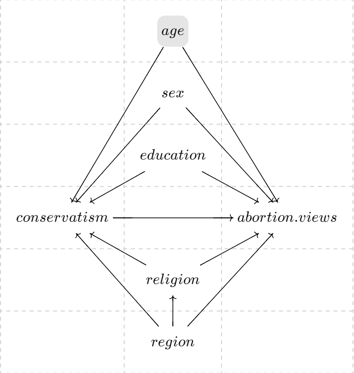
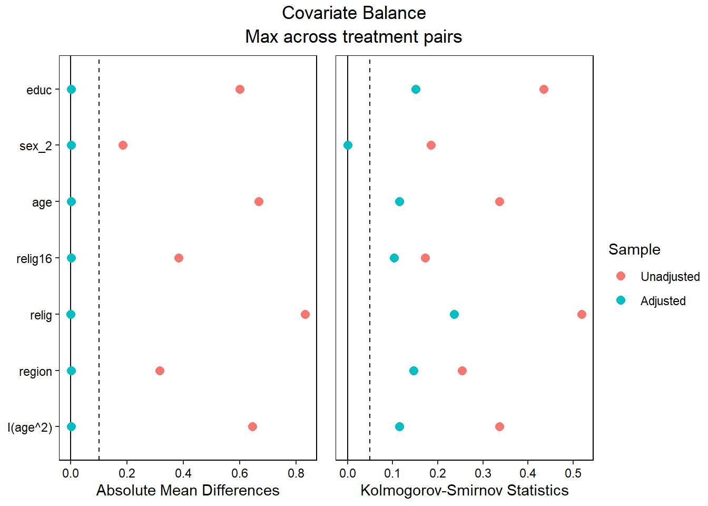
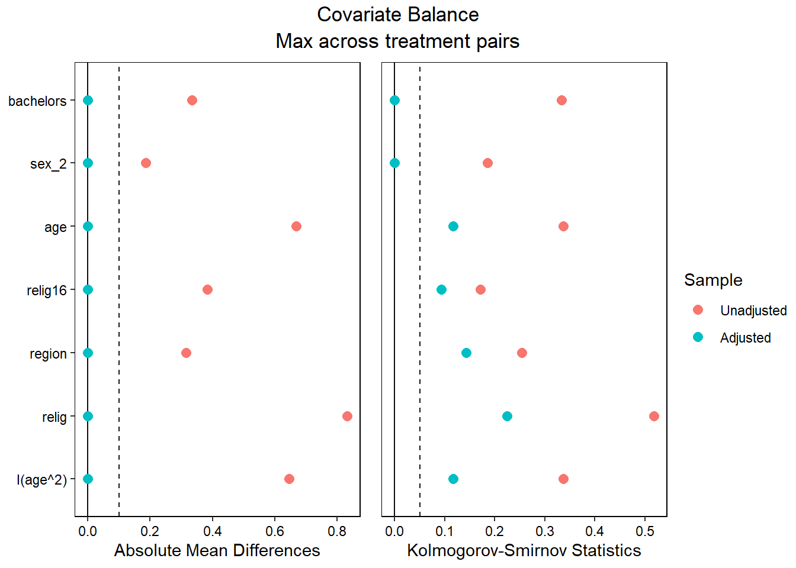
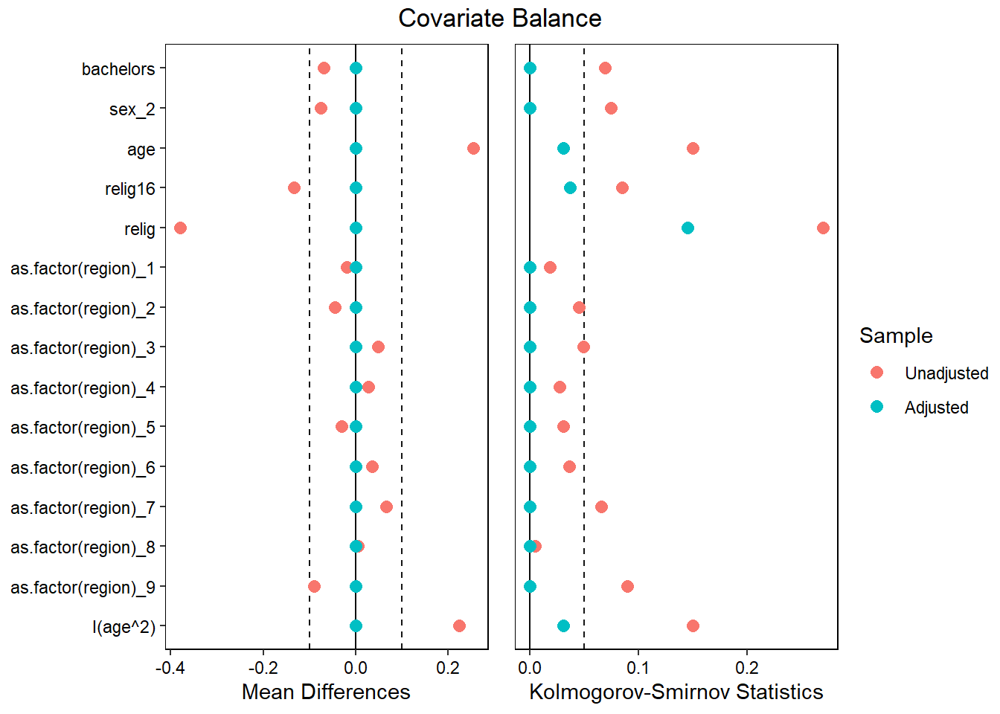

I’m going to look at one treatment and two outcomes. The theory of dyadic morality, developed by Kurt Gray and Chelsea Schein, posits that people view things as more immoral when they perceive harm to a vulnerable patient. They also argue that liberals and conservatives view different entities as moral patients. I will test that here by looking at how conservatism predicts 1) if someone views abortion as acceptable if it prevents the child from having severe birth defects and 2) if someone views abortion as acceptable if it is to protect the life of the mother. I would expect those who are more conservative to view abortion as more acceptable when it is necessary to prevent a child from having severe birth defects but less acceptable when it is necessary to save the life of the mother, compared to those who are less conservative.
# setuplibrary(gssr)
Package loaded. To attach the GSS data, type data(gss_all) at the console.
For the codebook, type data(gss_dict).
For the panel data and documentation, type e.g. data(gss_panel08_long) and data(gss_panel_doc).
For help on a specific GSS variable, type ?varname at the console.
── Conflicts ────────────────────────────────────────── tidyverse_conflicts() ──
✖ dplyr::filter() masks stats::filter()
✖ dplyr::lag() masks stats::lag()
ℹ Use the conflicted package (<http://conflicted.r-lib.org/>) to force all conflicts to become errors
library(WeightIt)library(cobalt)
cobalt (Version 4.5.3, Build Date: 2024-01-09)
library(MatchIt)
Attaching package: 'MatchIt'
The following object is masked from 'package:cobalt':
lalonde
Call:
lm(formula = abdefect ~ polviews, data = gss2022)
Residuals:
Min 1Q Median 3Q Max
-0.48657 -0.20241 -0.20241 0.08175 1.08175
Coefficients:
Estimate Std. Error t value Pr(>|t|)
(Intercept) 0.823527 0.031648 26.02 <2e-16 ***
polviews 0.094720 0.007411 12.78 <2e-16 ***
---
Signif. codes: 0 '***' 0.001 '**' 0.01 '*' 0.05 '.' 0.1 ' ' 1
Residual standard error: 0.3743 on 1091 degrees of freedom
(2451 observations deleted due to missingness)
Multiple R-squared: 0.1302, Adjusted R-squared: 0.1294
F-statistic: 163.4 on 1 and 1091 DF, p-value: < 2.2e-16
# more conservative = less likely to supportabhlth_ne <-lm(abhlth ~ polviews,data = gss2022)summary(abhlth_ne)
Call:
lm(formula = abhlth ~ polviews, data = gss2022)
Residuals:
Min 1Q Median 3Q Max
-0.16450 -0.10176 -0.07038 -0.00764 1.02374
Coefficients:
Estimate Std. Error t value Pr(>|t|)
(Intercept) 0.944892 0.020972 45.054 < 2e-16 ***
polviews 0.031373 0.004909 6.391 2.42e-10 ***
---
Signif. codes: 0 '***' 0.001 '**' 0.01 '*' 0.05 '.' 0.1 ' ' 1
Residual standard error: 0.2508 on 1112 degrees of freedom
(2430 observations deleted due to missingness)
Multiple R-squared: 0.03543, Adjusted R-squared: 0.03456
F-statistic: 40.84 on 1 and 1112 DF, p-value: 2.424e-10
# more conservative = less likely to support# 9 percentage points less likely to support for defect# 3 percentage points less likely to support for mother
Our naive estimates are for every point increase in conservatism, we expect an increase of 9 percentage points in probability of being opposed to abortion to prevent birth defects and 3 percentage points in probability of being opposed to abortion to prevent harm to the mother. This seems to contradict the theory of dyadic morality, as we would expect conservatives to be less opposed if it leads to less suffering for the child. We shall look into this more, but I assume that this is likely because the birth defects could be perceived as less harmful than abortion.
9.1.2 DAGs and Estimands

My estimand is an ATE. I am interested in how movement towards being liberal might decrease opposition to abortion, and how movement toward being conservative might increase opposition to abortion.
9.1.3 Selecting Covariates
The primary confounds that I believe might affect my estimate are educ, sex, age, relig16, relig, and region. These are all included in my DAG above except relig16. I include relig16 as a covariate, as people are likely shaped by the religion they grew up with, even if it is not the religion they endorse now.
9.1.4 Regression (ATE)
# regression# adjust for education, sex, age, religious preference, religion raised, regionabdefectreg =lm(abdefect ~ polviews + educ + sex + age + relig16 + relig + region +I(age^2),data = d) summary(abdefectreg)
Call:
lm(formula = abdefect ~ polviews + educ + sex + age + relig16 +
relig + region + I(age^2), data = d)
Residuals:
Min 1Q Median 3Q Max
-0.54822 -0.24240 -0.13850 0.05536 1.08855
Coefficients:
Estimate Std. Error t value Pr(>|t|)
(Intercept) -2.395e-02 1.224e-01 -0.196 0.8450
polviews 8.987e-02 7.967e-03 11.280 <2e-16 ***
educ -6.921e-03 4.420e-03 -1.566 0.1176
sex 1.191e-02 2.356e-02 0.505 0.6135
age -1.478e-03 3.923e-03 -0.377 0.7066
relig16 -1.141e-02 7.378e-03 -1.546 0.1224
relig -1.440e-02 6.289e-03 -2.290 0.0222 *
region 1.018e-02 4.901e-03 2.078 0.0380 *
I(age^2) 1.116e-05 3.840e-05 0.290 0.7715
---
Signif. codes: 0 '***' 0.001 '**' 0.01 '*' 0.05 '.' 0.1 ' ' 1
Residual standard error: 0.373 on 1002 degrees of freedom
Multiple R-squared: 0.147, Adjusted R-squared: 0.1402
F-statistic: 21.58 on 8 and 1002 DF, p-value: < 2.2e-16
abhlthreg =lm(abhlth ~ polviews + educ + sex + age + relig16 + region +I(age^2),data = d) summary(abhlthreg)
Call:
lm(formula = abhlth ~ polviews + educ + sex + age + relig16 +
region + I(age^2), data = d)
Residuals:
Min 1Q Median 3Q Max
-0.20071 -0.09988 -0.06653 -0.01306 1.05576
Coefficients:
Estimate Std. Error t value Pr(>|t|)
(Intercept) -5.830e-02 8.122e-02 -0.718 0.4730
polviews 3.247e-02 5.289e-03 6.139 1.19e-09 ***
educ -4.277e-03 2.963e-03 -1.443 0.1492
sex 1.937e-02 1.579e-02 1.226 0.2205
age 1.885e-03 2.631e-03 0.717 0.4738
relig16 -8.065e-03 4.580e-03 -1.761 0.0785 .
region 8.948e-05 3.287e-03 0.027 0.9783
I(age^2) -1.682e-05 2.576e-05 -0.653 0.5138
---
Signif. codes: 0 '***' 0.001 '**' 0.01 '*' 0.05 '.' 0.1 ' ' 1
Residual standard error: 0.2502 on 1003 degrees of freedom
Multiple R-squared: 0.0491, Adjusted R-squared: 0.04246
F-statistic: 7.398 on 7 and 1003 DF, p-value: 1.092e-08
avg_slopes(abdefectreg, variables ="polviews")
Term Estimate Std. Error z Pr(>|z|) S 2.5 % 97.5 %
polviews 0.0899 0.00797 11.3 <0.001 95.6 0.0743 0.105
Columns: term, estimate, std.error, statistic, p.value, s.value, conf.low, conf.high
Type: response
avg_slopes(abhlthreg, variables ="polviews")
Term Estimate Std. Error z Pr(>|z|) S 2.5 % 97.5 %
polviews 0.0325 0.00529 6.14 <0.001 30.2 0.0221 0.0428
Columns: term, estimate, std.error, statistic, p.value, s.value, conf.low, conf.high
Type: response
Very little change from naive estimate.
I assume this is because conservatives might think that abortion is worse for the child than being born with a severe birth defect (which makes sense). Additionally, most respondents express support for the right for abortion when it endangers the health of the mother, but less are supportive when it is risks birth defects.
9.1.5 Weighting
# weightingebal <-weightit(formula =as.factor(polviews) ~ educ + sex + age + relig16 + relig + region +I(age^2), data = d, method ="ebal", estimand ="ATE",over =FALSE)love.plot(ebal,stats =c("m", "ks"),thresholds =c(.1, .05))
Warning: Standardized mean differences and raw mean differences are present in the same plot.
Use the `stars` argument to distinguish between them and appropriately label the x-axis.

Oh wow, that is not good. Maybe try to make education binary (less than bachelors = 0, bachelors or more = 1).
d <-mutate(d,bachelors =if_else(educ >=16, 1, 0))
# trying againebal2 <-weightit(formula =as.factor(polviews) ~ bachelors + sex + age + relig16 + region + relig +I(age^2), data = d, method ="ebal", estimand ="ATE",over =FALSE)love.plot(ebal2,stats =c("m", "ks"),thresholds =c(.1, .05))
Warning: Standardized mean differences and raw mean differences are present in the same plot.
Use the `stars` argument to distinguish between them and appropriately label the x-axis.

Better, but still gross. Maybe it is better to change polviews from continuous to binary. 0 being extremely liberal to moderate, and 1 being slightly conservative to extremely conservative. This might be problematic though… Also should treat region as a factor.
d <-mutate(d,conservative =if_else(polviews >=5, 1, 0))ebal3 <-weightit(formula = conservative ~ bachelors + sex + age + relig16 + relig +as.factor(region) +I(age^2), data = d, method ="ebal", estimand ="ATE",over =FALSE)love.plot(ebal3,stats =c("m", "ks"),thresholds =c(.1, .05))
Warning: Standardized mean differences and raw mean differences are present in the same plot.
Use the `stars` argument to distinguish between them and appropriately label the x-axis.

That’s better! Still looks a little ugly though. Difficult to balance on religion it seems. I think that relig16 and relig should both be factors, but making them factors breaks the weights. Could make them binary but I’m not sure what the best cutoff would be. For now, I’ll divide them both into non-religious vs religious.
d <-mutate(d,relig16_new =if_else(relig16 ==4, 0, 1),relig_new =if_else(relig ==4, 0, 1))ebal4 <-weightit(formula = conservative ~ bachelors + sex + age +as.factor(relig16_new) +as.factor(relig_new) +as.factor(region) +I(age^2), data = d, method ="ebal", estimand ="ATE",over =FALSE)love.plot(ebal4,stats =c("m", "ks"),thresholds =c(.1, .05))
Warning: Standardized mean differences and raw mean differences are present in the same plot.
Use the `stars` argument to distinguish between them and appropriately label the x-axis.
Call:
lm(formula = abhlth ~ conservative, data = d, weights = ebal4$weights)
Weighted Residuals:
Min 1Q Median 3Q Max
-0.24052 -0.07983 -0.04084 -0.03621 1.35185
Coefficients:
Estimate Std. Error t value Pr(>|t|)
(Intercept) 0.039333 0.009336 4.213 2.74e-05 ***
conservative 0.080382 0.016440 4.889 1.18e-06 ***
---
Signif. codes: 0 '***' 0.001 '**' 0.01 '*' 0.05 '.' 0.1 ' ' 1
Residual standard error: 0.2443 on 1009 degrees of freedom
Multiple R-squared: 0.02314, Adjusted R-squared: 0.02218
F-statistic: 23.91 on 1 and 1009 DF, p-value: 1.177e-06
Okay, so, the interpretation changes now that I’ve dichotomized conservatism. However, the results show a similar pattern to what they looked like before. Identifying as having more conservative views results in a 23 percentage point increase in probability of being opposed to abortion to prevent birth defects, and a 8 percentage point increase in probability of being opposed to abortion to prevent harm to the mother. Makes sense, but not exactly supportive of the theory of dyadic morality. Again, this is likely because abortion could be perceived as causing greater harm than birth defects.
9.1.6 Double Robustness Time
mod_db_abdefect =lm(abdefect ~ conservative + bachelors + sex + age + relig_new + relig16_new + region +I(age^2),data = d,weights = ebal4$weights)summary(mod_db_abdefect)
Call:
lm(formula = abdefect ~ conservative + bachelors + sex + age +
relig_new + relig16_new + region + I(age^2), data = d, weights = ebal4$weights)
Weighted Residuals:
Min 1Q Median 3Q Max
-0.65535 -0.24178 -0.11520 0.03323 1.31077
Coefficients:
Estimate Std. Error t value Pr(>|t|)
(Intercept) -9.409e-02 1.076e-01 -0.874 0.382301
conservative 2.307e-01 2.529e-02 9.125 < 2e-16 ***
bachelors -5.938e-02 2.459e-02 -2.415 0.015903 *
sex 2.117e-02 2.376e-02 0.891 0.373135
age -6.796e-04 3.939e-03 -0.173 0.863062
relig_new 1.538e-01 2.937e-02 5.236 2e-07 ***
relig16_new 2.279e-02 4.110e-02 0.554 0.579422
region 1.834e-02 4.944e-03 3.711 0.000218 ***
I(age^2) 5.868e-06 3.867e-05 0.152 0.879418
---
Signif. codes: 0 '***' 0.001 '**' 0.01 '*' 0.05 '.' 0.1 ' ' 1
Residual standard error: 0.3758 on 1002 degrees of freedom
Multiple R-squared: 0.1213, Adjusted R-squared: 0.1143
F-statistic: 17.29 on 8 and 1002 DF, p-value: < 2.2e-16
mod_db_abhlth =lm(abhlth ~ conservative + bachelors + sex + age + relig_new + relig16_new + region +I(age^2),data = d,weights = ebal4$weights)summary(mod_db_abhlth)
Call:
lm(formula = abhlth ~ conservative + bachelors + sex + age +
relig_new + relig16_new + region + I(age^2), data = d, weights = ebal4$weights)
Weighted Residuals:
Min 1Q Median 3Q Max
-0.21151 -0.09166 -0.05949 0.00022 1.40210
Coefficients:
Estimate Std. Error t value Pr(>|t|)
(Intercept) -7.364e-02 6.955e-02 -1.059 0.28995
conservative 8.038e-02 1.634e-02 4.920 1.01e-06 ***
bachelors -1.737e-02 1.588e-02 -1.093 0.27451
sex 1.218e-02 1.535e-02 0.793 0.42781
age 8.606e-04 2.545e-03 0.338 0.73530
relig_new 5.947e-02 1.897e-02 3.134 0.00177 **
relig16_new 2.740e-02 2.655e-02 1.032 0.30232
region 9.644e-04 3.194e-03 0.302 0.76277
I(age^2) -5.119e-06 2.498e-05 -0.205 0.83769
---
Signif. codes: 0 '***' 0.001 '**' 0.01 '*' 0.05 '.' 0.1 ' ' 1
Residual standard error: 0.2428 on 1002 degrees of freedom
Multiple R-squared: 0.04203, Adjusted R-squared: 0.03438
F-statistic: 5.495 on 8 and 1002 DF, p-value: 8.23e-07
Similar to the weighting results.
9.1.7 Summary
As mentioned previously, I wanted to test the theory of dyadic morality with regard to views on abortion. According to the theory of dyadic morality, conservatives are more likely to view an action as immoral if it harms a more vulnerable patient. This led me to assume that an increase in conservative ideology would result in both an increase in opposition to abortion in order to protect the mother, and in order to prevent severe birth defects. However, I thought that more conservatism would lead to a weaker effect for opposition to abortion in order to prevent birth defects, compared to abortion necessary to protect the mother from harm. This is because conservatives are theoretically more likely to want to reduce harm to the baby, compared to reducing harm to the mother.
I utilized regression and covariate balancing in order to attempt to close the backdoor paths from a variety of potential confounders (religious preferences, age, sex, etc.). I had to make significant changes to the predictors I used in order to achieve balance. Such as dichotomizing religious preference and conservatism. Overall, I believe my final model likely does a decent job at closing backdoor paths, but there are likely some unobserved confounders that could affect my results. I think that another interesting analysis could be to predict views on abortion in these specific cases from a participants views on abortion in general, as well as conservatism. I did not include that analysis here, as I assumed that it would not offer any new insights, but, the more I think about it, the more I believe that it could prove useful. Conservatives, while unlikely to support abortion in general, might be more likely to support it in cases that prevent future issues for the child.
My results were not as I expected them to be. Identifying as at least slightly conservative results in an increase of 23 percentage points in probability of being opposed to abortion to prevent birth defects, and a roughly 9 percentage point increase in probability of being opposed to abortion to prevent harm to the mother. This is the opposite of what I expected, as this indicates that conservatives are less accepting of abortion when it can potentially prevent birth defects, compared to when it can potentially prevent harm to the mother. As mentioned previously, I feel that this might be because birth defects might not immediately be recognized as harmful, and if conservatives perceive an unborn fetus as a person who can feel harm, then abortion is a greater harm to them than possible birth defects are. A survey could better test my hypothesis by posing the potential harm to the mother as more similar to the harm that the child could face. That way, the only difference between the two are patients affected.